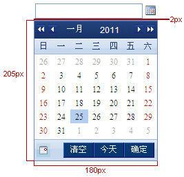
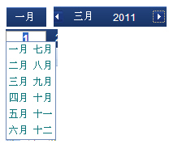
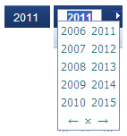
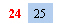

1.1 日期控件文本框交互
| 规则编号 | 交互行为 | 交互规范 |
| 【规则1-1-1】 | 文本输入框操作说明 |
1、日期的文本输入框，支持键盘直接录入； 2、点击文本输入框和图标都弹出日期选择面板； 3、初始默认状态下展示当前日期信息；（需考虑场景） 4、自动对非法的日期格式予以纠正,防止用户输入错误; 5、支持左右方向键； 6、按enter键进行校验,如格式范围正确则跳转到下一个控件,不正确则提示并返回焦点到校验位置； |
| 【规则1-1-2】 | 文本框单击交互 |
1. 当日期图标的位置在文本框外时： a) 点击日期图标弹出日期显示面板，位置为文本框的正下方； b) 点击日期选择文本框获得焦点，可手工输入日期； 2、当日期图标的位置在文本框内时： a) 点击日期选择文本框内任意位置获得焦点，可手工输入日期，同时弹出日期显示面板，位置为文本框的正下方； |
| 【规则1-1-3】 | 文本框关联交互 |
1、当关联的日期文本框为空时，日期显示面板的日期默认为系统现在时； 2、当关联的日期文本框有日期，且完整时，日期显示面板的日期默认为关联的日期文本框的时间； 3、当关联的日期文本框有日期，但不完整时，日期显示面板的日期和相关日期对应，没有的则默认为系统现在时； |
| 【规则1-1-4】 | 文本框信息校验 |
1、当用户输入不完整、格式不正确或错误的字段焦点离开文本框，弹出提示：“不合法的日期格式或者日期超过限定范围，需要撤销吗？” a) 点击【确定】按钮，清空已输入的字段； b) 点击【取消】按钮，错误文字变红，焦点仍集中到文本框中； |
1.2 日期显示面板交互
| 规则编号 | 交互行为 | 交互规范 |
| 【规则1-2-1】 | 日期显示面板说明 |
1、弹出位置不可移动； 2、默认高亮显示当天时间； 3、日期面板中的天数处，支持上下左右箭头选择移动；  |
| 【规则1-2-2】 | 月份/年份/日期显示 |
月份显示: 1、默认为当前月，单击月份文字出现12个月份选择； 2、单击月份链接文字出现月份下拉选择框，手工输入月份； 3、单击左右月份箭头图标可切换月份； 4、可通过左右上下键选择月份；  年份显示: 1、默认为当前年度，单击年份文字出现年份选择，范围是1900-2099； 2、单击年度链接文字出现年度下拉选择框，可手工输入年份； 3、可通过左右上下键选择选择年份； 4、单击左右年度箭头图标可切换年度；  日期显示: 1、日期显示说明： a) 支持鼠标的单击确定日期； b) 支持左右上下方向键的顺序筛选，可通过左右方向键实现跨月份的翻选； c) 支持ENTER键选中日期； 2、日期选中标识： a) 灰兰色的为当先选择日期； b) 红色的选中标识为当前日期（今天）（如下图所示）；  3、鼠标在日期面板中的移动： a) 鼠标滑过的日期，有状态显示； b) 月份显示，年份显示等没有状态的变化，仅支持鼠标的单击； |
| 【规则1-2-3】 | 关闭日期显示面板的交互方式 |
1. 确定，取消按钮方式： a) 点击确定按钮，则保存当前选择日期结果，日期显示面板的关闭； b) 日期文本框展示为选择结果，点击确定按钮，则不保存当前选择日期结果，日期显示面板的关闭，同时日期文本框数据不改变； 2、日期显示框内的单击： a) 单击日期显示框内任一具体日期，日期显示面板的关闭，同时日期文本框展示为选择结果； 3、文本框的单击： a) 单击文本框，显示日期面板，再次单击文本框外任意地方则关闭日期面板，同时不保存当前选择结果； |